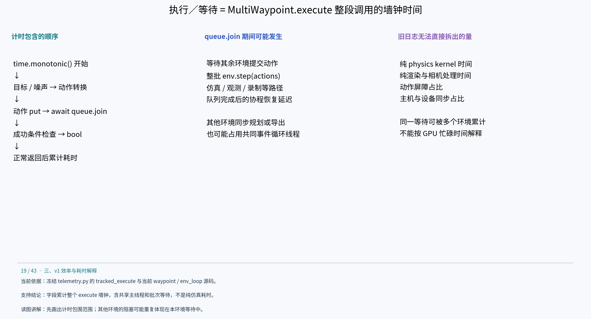
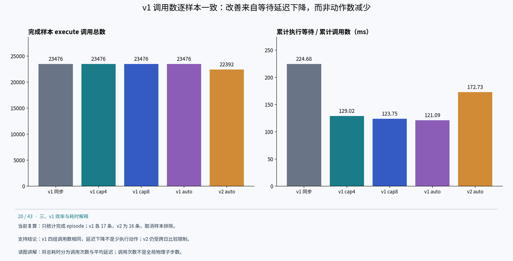
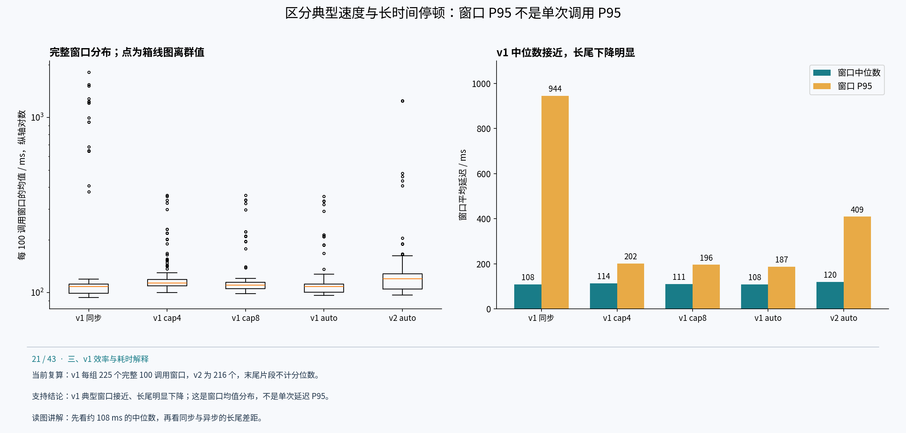
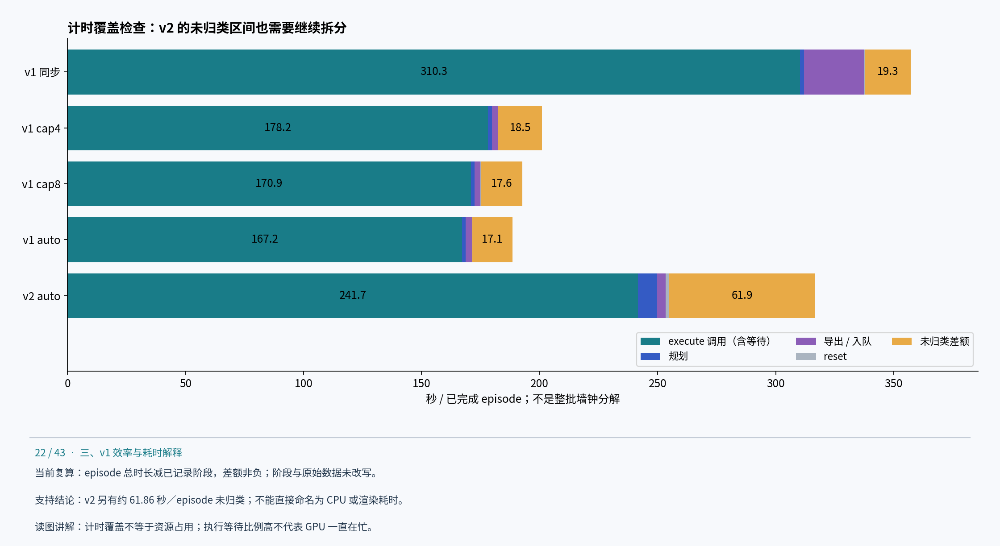

展开章节目录
- 执行／等待专项分析：累计的是协程调用延迟，不是纯仿真时间
执行／等待内部耗时分析
执行／等待专项分析：累计的是协程调用延迟，不是纯仿真时间
1. 计时器具体包住了什么

执行等待的真实计时边界实验冻结 telemetry.py:233–250 在 MultiWaypoint.execute 外包一层 tracked_execute：先读取 time.monotonic，await 原 execute 返回，再给 execution_steps 加一，并将整个区间累计为 execution_wait_seconds。每完成 100 次调用记录一条 execution_progress。它没有显式同步 GPU，也没有对每个内部步骤分别计时。该字段更准确的名称是“MultiWaypoint.execute 累计墙钟耗时（含协程等待）”。
started = time.monotonic()
result = await original_execute(self, *args, **kwargs)
episode['execution_steps'] += 1
episode['execution_wait_seconds'] += time.monotonic() - started
计数在正常返回后递增，包括返回 False 的调用；异常或取消使本次调用未执行到累加语句。因此这里的 execution_steps 是被包装方法正常返回的调用次数，不能直接称为全局物理子步数。simulated_seconds 也是由调用数乘 step_dt 推得，不是独立测得的仿真工作量。
当前 MultiWaypoint.execute 的操作顺序为：构造末端目标、噪声及透传动作 → target_eef_pose_to_action → 向队列放入 (env_id, action) → await queue.join() → 调用成功条件并转为 bool。生产的队列分支由 env_loop 收齐动作后执行一次 env.step(actions)，再调用 task_done；等待协程恢复后才返回。
例如环境 A 已入队等待，环境 B 在同一事件循环线程执行同步导出，那么 B 的导出耗时可能同时出现在 A 的 execution_wait 中。多个环境等待同一批 env.step，也会各自累计这段时间。因此 8 个环境的执行等待之和不是机器的独占工作时间；把它当作 GPU 仿真总耗时会重复计数。
2. 已有日志能再拆一层：调用次数 × 每次调用平均延迟

按调用次数归一化的执行等待本版重新读取五组原始 telemetry.jsonl，仅统计 episode_finished 样本，排除 episode_cancelled 和仍在途任务。v1 各 17 条完成（16 成功、1 失败），v2 新重跑 16 条完成。定义加权平均调用延迟为 Σexecution_wait / Σexecution_steps，避免把不同长度 episode 的均值再次等权平均。
v1 四组不仅总调用数一致，按 env_id 与 attempt 编号匹配的 17 个完成样本也逐一具有相同调用数。这支持“v1 执行等待下降不是由已完成样本少执行了动作造成的”：auto 比同步的平均调用延迟下降约 46.1%。相同编号与次数不证明每个动作数值完全相同，也没有核对逐帧内容一致性。
v2 与 v1 的完成数及轨迹调用数不同。归一化后 v2 仍有较高平均调用延迟，但这是跨日期系统观测，不能解释成 v2 的物理仿真 kernel 必然更慢。总调用数也不是独立 env.step 批次数，因为多个环境共享同一次批量步进。
3. 更明显的区别在长尾，而不是典型窗口

每100次调用窗口的延迟分布execution_progress 每 100 次正常返回记录一次累计值。对同一完成 episode 的相邻累计值求差，可得到“100 次 execute 调用的累计耗时／100”。首个窗口以累计值 0 为基准；末尾不足 100 次的片段不纳入窗口分位数，但仍包含在上一表总量中。v1 每组 225 个完整窗口，v2 为 216 个。窗口跨并发 episode，彼此可能重叠，不能当成独立重复实验。
P95 使用排序后索引 floor(0.95×(n−1))，未插值。这里是 100 次调用窗口均值的分位数，不是单次调用延迟的 P95。 同步版与 auto 的窗口中位数都约 108 毫秒，但窗口 P95 从 944 毫秒降到 187 毫秒。它说明典型执行区间的速度接近，长时间停顿明显减少；这与同步保存阻塞共享主线程的机制相符，但没有逐调用追踪，不能把长尾减少全部定量归因于保存。
v2 窗口中位数约 120 毫秒、P95 约 409 毫秒，既存在典型区间差异，也存在长尾。现有数据不能进一步区分其中多少来自执行路径、渲染、规划占用其他环境的等待、设备同步或系统状态。
4. 还有一个此前未单独画出的部分：未归类区间

episode计时覆盖与未归类区间以每个完成 episode 的 duration_seconds 减去已记录的 reset、motion_plan、export／export_enqueue 与 execution_wait，可计算“未被这些计时段覆盖的差额”。本轮所有差额非负。它是剩余墙钟区间，不应直接命名为 CPU 计算、轨迹生成或调度耗时。
v1 auto 的执行等待绝对值大幅下降，但占比从约 86.9% 变成 88.7%，原因是其他阶段也下降；不能仅凭“占比仍高”认定优化无效。v2 的未归类差额约 61.86 秒／episode，明显高于 v1 auto 的 17.08 秒，下一轮除了拆 env.step，也应定位这些未覆盖区间。候选包括 execute 之外的数据生成、规划结果转换、控制逻辑、日志及调度间隔，但旧日志不足以逐项确认。
本表是完成 episode 的计时覆盖检查，未包含取消样本的全部执行，也没有覆盖整批启动、排空和合并；不能将其堆叠条形当作整批墙钟分解。
5. 真正拆到物理、渲染和等待，需要哪些新计时点
若需设备 kernel 的准确时间与重叠关系，应另开带 CUDA events／profiler 的诊断运行；不要为了计时在每一步无条件加 cuda.synchronize，再把受干扰的运行与旧吞吐直接比较。当前新增的是离线日志复算，没有开展细粒度重跑，也没有声称已测出物理、渲染和队列等待各自占比。
复算文件：execution-analysis.json、execution-episodes.csv、execution-windows.csv；analyze_execution.py 接收 v1 日志根目录和 v2 日志路径。原始日志哈希记录在分析文件中。窗口 interval_start/end 是相邻进度事件的时间戳，可能包含 execute 之外的间隔，不是每次 execute 的精确起止时间，不能直接用它们算内部子阶段占比。